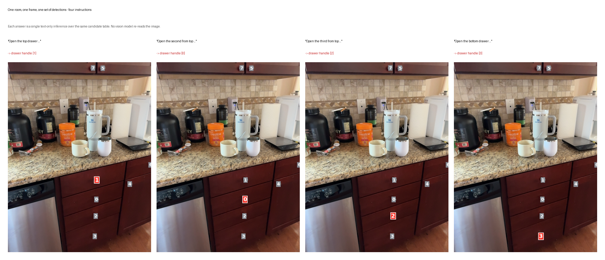

SceneFun3D · instruction-level affordance grounding · independent research project · single GPU
Replacing fifty visual inferences with one text-only inference
Given one sentence — "open the top left drawer of the cabinet to the left of the TV" — and a scanned 3D room,
output the 3D mask of the part a hand would actually touch. The hard part is not finding the cabinet;
it is deciding which of the four identical handles on it is meant.
Mainstream methods answer this by running a 7B vision-language model once per frame across 50 frames.
This project replaces that with a symbolic bottleneck: one frame becomes a text-only candidate table,
and disambiguation becomes a single inference that never sees an image.

A self-scanned kitchen, fully out of distribution. The four instructions share one frame and one
set of detections — only the parsed ordering constraint differs, and the selected ids (1 / 0 / 2 / 3) are not
in spatial order. Reasoning chain for each in demo_ood/.
What this project claims — and what it does not
The claim is a structurally cheaper pipeline plus two diagnoses the literature had not stated clearly,
not a score. AP50 edges past the strongest concurrent training-free method; AP25 does not,
and the language model used here is larger than the one it is compared against.
Both are stated in the results table below rather than left to be discovered.
The method, against the baseline it replaces
The core proposition: the information spatial disambiguation needs — who is left of whom, who is inside whom, which is topmost —
is geometric, and does not require pixels. Compress a frame into a purely symbolic candidate table
(each detection's bbox, centre, area, confidence, plus containment relations) and the reasoning collapses into a text task.
Fifty 7B-VLM image reads become one text inference, and the vision side reduces to a single 860 M open-vocabulary segmenter.
The side effect is worth more than the main effect: detections are cached by (scene, concept), so asking a room ten questions costs almost what asking it one does.
Pillar 1 · method
The symbolic bottleneck
One frame → candidate table → one text-only inference. Vision side 860 M vs 8.8 G, 28.4 s vs 273 s (same machine, 9.6×); more instructions do not mean more vision compute — the demo's 13 instructions share 1276 segmentation calls where per-instruction re-running needs 2639.
Pillar 2 · diagnosis
Two things not stated clearly elsewhere
(1) The official AP50 is precision ≥ 0.5, not IoU > 0.5 (obtained from the evaluation source) ⇒ the correct strategy is to tighten masks, not recall more. (2) Granularity mismatch is the real AP50 ceiling — ground truth labels the switch button while the segmenter outlines the whole plate; better candidate coverage cannot fix it.
Pillar 3 · execution
Whole chain, with the failures kept
Baseline reproduction → stratified oracle diagnosis → method → full 445-instruction evaluation → two model-scale ablations → OOD demo on three self-scanned rooms. Twenty rejected routes are documented individually, five of them self-refutations.
Results
SceneFun3D val split0, all 442 val instructions.
Method
Type
AP50
AP25
Note
This work · multi-frame th0.7
training-free
34.8
44.1
headline configuration
This work · single frame + refinement
training-free
29.9
44.3
same reasoning, no voting
This work · single frame, no refinement
training-free
19.5
38.0
selection only
UniFunc3D-30B
training-free
31.24
51.01
AP25 is 6.9 ahead of this work
UniFunc3D-8B
training-free
23.82
44.04
AP25 level with this work
AffordMEM
training-free
20.13
41.66
explicit 3D scene graph
Fun3DU (self-reported)
training-free
16.90
33.30
probably optimistic, see below
Fun3DU (reproduced here)
—
13.71
26.29
AffordBot reproduces it at 12.6
Oracle (perfect selection, no refinement)
—
21.3
—
the turning point, see below
Stated limitations
AP25 is worse than UniFunc3D-30B (44.1 vs 51.01). The cause is the granularity ceiling diagnosed below: the masks here are tighter, which is why AP50 is higher, but there is no advantage at the "found the right object" layer. This column is not a win.
The language model used here is larger than 30B, so the headline is not a size-matched comparison. What it buys is measured: swapping the reasoning stage to a 9B open model costs 4.1 AP50 and nothing structural, extrapolating to 25.7 on full val before any multi-frame voting. Parsing is the stage that is genuinely sensitive to model quality.
The method is not a new paradigm. "Candidate generation + selector" is an existing idea; the differentiation originally intended here (explicit 3D spatial disambiguation) was found already occupied by AffordMEM and UniFunc3D, and was demoted on that basis.
The finding that inverted the optimisation direction
From reading the official evaluation source:
precision = |gt & pred| / |pred| ← denominator is pred
AP50 = fraction(precision >= 0.50) ← not IoU > 0.5recall = |gt & pred| / |gt| → AR50 / AR25
mIoU = the only column that truly uses IoU
The consequence is that the metric is precision-only. Selecting one extra candidate adds to the denominator without necessarily adding to the numerator;
a large mask covering a small ground truth has high recall but low precision, so AP gets worse.
The correct strategy is therefore prefer fewer over more, and tighten the mask — whereas an IoU reading pushes toward "recall a bit more", exactly backwards.
This invalidated every self-evaluation protocol used before it, all of which were redone.
The turning point: a perfect-selection oracle scores only 21.3
The first oracle implementation returned 29.9 — identical to the actual score — and its AR50 was below the bound it was supposed to define. That is not consistent.
Rebuilt as "enumerate every candidate, run a full lift for each, take the best by 3D precision":
meaning optimal candidate on every question, but no refinement → only 21.3
what was actually achieved → 34.8
⇒ refinement contributes more than the entire potential of perfect selection
⇒ disambiguation is saturated; the remaining effort belongs on the mask side
This judgement decided where the remaining effort was spent.
Three tiers of gain on the mask side
All three rows use the same reasoning results with instance selection held completely fixed; only post-projection processing changes.
A counter-intuitive and quantified result: the bulk of the precision loss is the 2D mask edge (+9.2), not depth bleed-through (+1.2).
Intuition blames points punching into the background; measurement says the segmenter's mask is about 5 px fatter than the true object,
and that rim projects onto the cabinet face behind the handle.
Multi-frame voting fixes precision but cannot fix a wrongly selected instance, and there is direct evidence — stratified by the reasoning's self-reported confidence and read at th0.9, where voting is fully engaged,
the high group goes 47.0 → 55.7 (+8.7) while the low group goes 9.6 → 11.0 (+1.4, barely moving).
The threshold is 0.7 rather than 0.9 because th0.9 buys 0.7 more AP50 at the cost of 1.6 AP25 and 5.0 AR50, leaving a median of 23 points — a mask that thin does not stand up.
Where the 9.3 points between AP50 and AP25 go
Visible directly in the per-question review figures: ground truth annotates the switch button while the segmenter outlines the whole switch plate;
ground truth annotates the whole remote control while the segmenter extracts one button on it;
ground truth annotates part of a socket while the segmenter outlines the entire white plate (recall 1.0, precision ≈ 1/3).
This is not failure to find, it is outlining at a granularity inconsistent with the annotation convention.
It also explains why every training-free method has AP25 crammed into 44–51: finding the right object is near-saturated for everyone, and the spread is granularity —
which is a labelling convention, and can be learned but not inferred.
Ablation: a 9B open model, with opposite conclusions for the two stages
Stage swapped
Cost
Conclusion
Reasoning only (candidate table → instance)
−4.1 AP50
Holds up (28.9 → 24.7 over 97 side-by-side questions; the 9B model is never uniquely correct)
Parsing only (instruction → constraint graph)
sensitive
Target concept correct at part level only 49.5% ⇒ wrong retrieval term ⇒ candidate-pool hit rate 64.5% → ~32%. The errors concentrate on dataset-specific naming, not on reasoning: six retrieval terms cover 354 of 444 instructions
The counter-intuitive part: the common assumption is that structured extraction is easy and reasoning is hard. Measurement says the reverse.
Within the same prompt, select (turning "top left" into an ordering constraint) is transcription and the 9B model reaches 91.7%;
concept requires inferring against the literal reading — the target of "open the drawer" is the handle, not the drawer front — and reaches only 49.5%.
The errors are structured too: socket → plug is wrong in all 24 cases, in the same direction. "Plug" is perfectly good English;
that this dataset labels the socket on the wall is an annotation convention, unguessable without training.
The two arms use different prompts, so this is not a pure model comparison and is not presented as one.
Out-of-distribution demo: three self-scanned rooms
Three household scenes scanned on site with an iPhone (a chest of drawers, a kitchen, a sofa corner), 13 instructions.
Fully out of distribution — different capture device, scenes, lighting, objects.
All 13 are answered correctly; there is no ground truth, so nothing is scored automatically and what is presented is the reasoning chain itself.
Two are deliberately marked low-confidence: one where the segmenter cannot recognise a branded, oddly shaped appliance, and one where a three-gang switch plate cannot be resolved from the instruction at all.
A geometry trap worth stating separately
The iPhone exports 1920×1440 jpgs stored landscape with EXIF orientation=6, while the intrinsics are given relative to the landscape original.
The first version tried to fold the orientation into the intrinsics matrix — which is wrong:
K expresses per-axis scaling and translation, but cannot express an axis swap.
The result is that 3D points still project in the landscape frame while the image has been rotated upright, a 90° discrepancy —
yet the projected points "look like they land on the image" and the visible-point statistics look normal.
What caught it: correlating the point cloud's own colour against the colour sampled at its projected pixel —
−0.23 before the fix, +0.89 after. The correct approach is to project in the original landscape frame first, then apply a pure 2D transform to the pixel coordinates.
A second line: supervised closed-set functional-part segmentation
Before the training-free line, the same data was attacked as a 9-class supervised segmentation problem with no language involved:
lifted DINOv2 features → PointTransformerV3 with a semantic head and an offset head.
per-point MLP on lifted features mAP 3.13 AP50 8.25 AP25 28.1
PointTransformerV3, dual-head 18.25 32.2 44.5 (5.8×)
Two enhancement routes failed and are reported as failures. The offset head is the more instructive one:
an oracle measured it as worth +18 AP, but the trained head never delivered it —
an upper bound tells you where the ceiling is, not whether it is reachable.
This line is also the evidence behind the first future-work item: training does learn the functional-part granularity
that the training-free line structurally cannot reach, which makes
"training-free front end + trained granularity refinement head" the clearest next step.
Every number on this page traces back to a raw .jsonl under results/ and can be recomputed offline without the dataset:
python code/task2/eval/mf_agg.py.